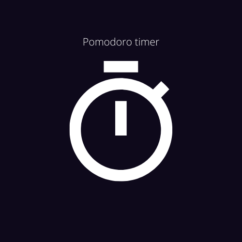

Jessica Fernanda
Front-End Developer
Projetos realizados
MovieTime é uma aplicação construída como projeto final do curso CAPPACITA DEV, capacitação profissional em tecnologia - IA. A aplicação consiste em criar uma interface gráfica que apresente pelo menos uma lista de filmes ou séries, chamando serviços do TMDb. (Uma base de dados gratuita e de código aberto sobre filmes e séries de TV).

Cronômetro pomodoro. A técnica pomodoro é um método de gerenciameno de tempo que consiste na utilização de um cronômetro para dividir nosso trabalho em períodos de 25 minutos separados por breves intervalos. Aplicação Front-end utilizando as tecnologias : HTML / CSS / JS / Bootstrap.
Deixe seu contato!